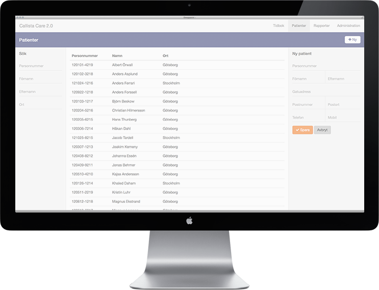
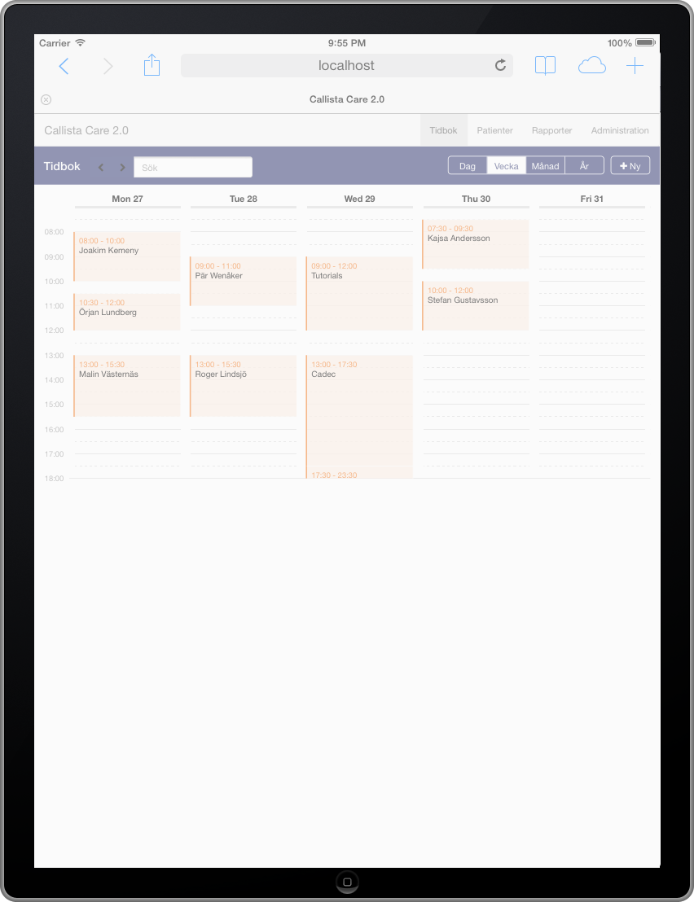
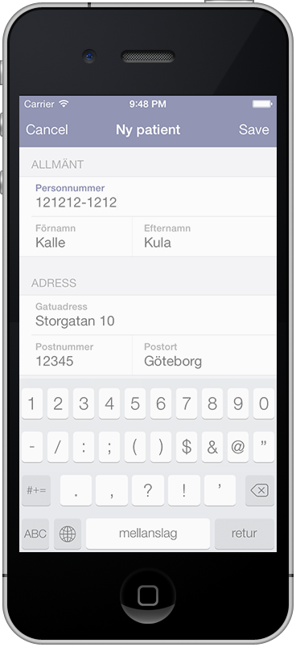
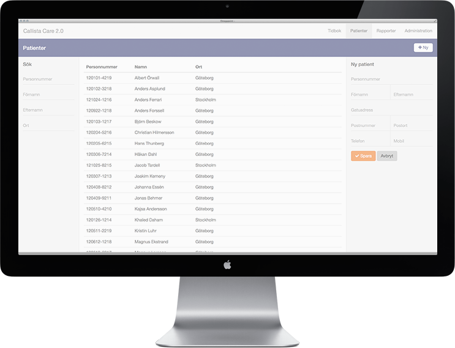
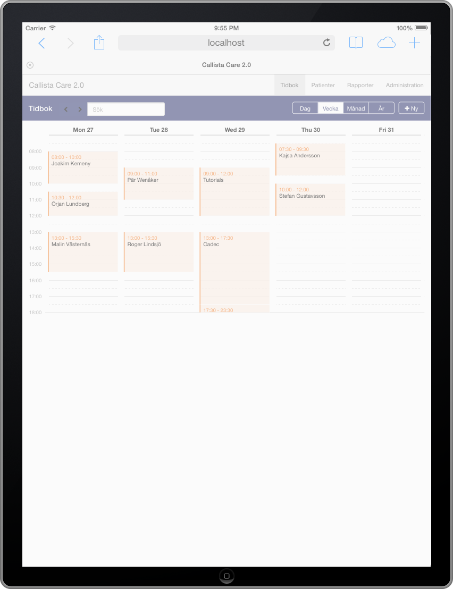
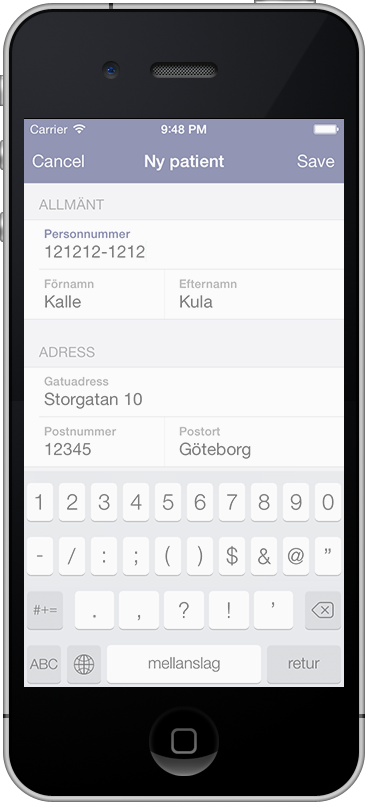

Rethink your
Frontend Architecture
Joakim Kemeny
@joakimkemeny
 





Välkomna hit och kul att det är så många här. Idag tänkte jag prata med er om hur ni bygger frontend i era applikationer och kanske få er att tänka till lite kring hur ni ska bygga era applikationer för att de ska vara bättre anpassade för dagens och morgondagens utmaningar. Ni kanske redan har den perfekta arkitekturen, vi får väl se, men jag vill i alla fall dela med mig av mina erfarenheter kring det här så får vi se var vi landar.
Jag heter Joakim Kemeny och jobbar helst med frontend på olika sätt. Oftast handlar det så klart om HTML, CSS och JavaScript eller kanske Objective-C men ibland får jag även skriva en och annan rad Java, Scala eller Groovy också. Om man vill skapa en riktigt bra frontend så behöver man ibland även fokusera på backend och lite av det kommer vi att få se här idag.
Jag tänker köra igång den här presentationen med en demo.
Det här är ett väldigt enkelt journalsystem som jag har tänkt att vi ska förbättra idag. Det har en tidbok med ett par olika vyer som man kan lägga till bokningar i. Man kan söka på patienter och givetvis även skapa nya. När man har hittat den patient som man är intresserad av kan man lägga in en journalanteckning och som ni ser man kan söka även på dessa.
Det finns ett par vyer till men de är tomma än så länge.
Varför ett journalsystem? Till att börja med kanske jag ska vara tydlig och säga att det inte finns några planer för Callista att börja tillverka journalsystem, även om vi i är tunga inom vårdsektorn, men faktum är att journalsystem var det första som jag byggde när jag började jobba och där finns många spännande utmaningar att lösa samtidigt som många kan relatera till det så jag hoppas att det ska vara en bra demo. När jag senast byggde journalsystem så bygdes det på Java Servlets med XML och XSLT för att skapa användargränssnittet. Det här systemet är lite mer modernt. Det är byggt som en Spring MVC applikation och jag har använt den senaste versionen av Spring och byggt enligt deras best practices så förhoppningsvis är det bättre än XSLT.
Det här är vår utgångspunkt idag, exakt hur den är byggd är inte jätteviktigt men det är en klassisk Java webbapplikation och jag kommer inte ens visa er någon kod från den idag.
Låt oss se vad som händer när man söker efter en patient i vår applikation. Så vi fyller i några sökvillkor och sedan trycker vi på sök.
Här skickas det anropet iväg till en server som tar hand om det. I Javavärlden så tas anropet förmodligen hand om av en Servlet och förmodligen någon typ av ramverk i form av Spring MVC, Struts, Wicket, JSF eller liknande. Därefter tuggar servern lite.
Kanske kommunicerar vi med någon databas eller med några andra system och därefter anropas en vy som renderar HTML som skickas tillbaka till användaren.
Den här modellen har vi jobbat efter i åtminstone 15 år. Ramverken har förbättrats men modellen är den samma. Ingenting speciellt spännande här.
Låt oss se hur servern beter sig om jag lägger lite last på den här sökningen.
Jag körde det här på min maskin (all kod kommer för övrigt finnas tillgänglig så ni kan köra själ va om ni är intresserade), jag körde det på min maskin och då lyckades jag pressa igenom 390 anrop i sekunden. Inte så dåligt, vi har ett system som fungerar och som presterar hyffsat bra tycker jag.
Vi återkommer hit men låt det vara vår startpunkt.
2014
Ok, en arkitektur som är 15 år gammal, låt oss titta lite på hur verkligheten ser ut idag, 2014.
2014
Först och främst har ju mobila enheter blivit en naturlig del när vi utvecklar applikationer. Ni hörde Peter prata om det här tidigare så om det inte är det så borde det vara det. Jag menar givetvis smartphones men lika viktigt är alla olika typer av tablets. Dessa enheter har blivit nästan lika kraftfulla som datorerna var för några år sedan och är en naturlig del av vardagen.
Någonting annat som smartphones, tablets men även en allt mer mogen markad har fört med sig är att det kommer fler och fler enheter och applikationer som riktar sig till oss konsumenter istället för till IT-avdelningarna och det har fört med sig att användarna har börjat förvänta sig bättre och enklare applikationer. Peter pratade om consumerization. Det duger inte längre med att det fungerar, användarna förväntar sig mer.
Låt oss för skoj skull se hur min demo fungerar i min telefon. Ok, vi har telefoner som är lika kraftfulla som datorerna var för några år sedan men det räcker inte riktigt. Det här är inte direkt ett verktyg som jag skulle vilja använda om jag var läkare.
2014
Som tur är bjuder 2014 även på en uppsjö av nya tekniker som dessutom börjar få ett så starkt fäste att de faktiskt går att använda i verkligheten.
2014
Detta gäller inte minst webbläsartillverkarna som i alla fall temporärt har slutat att konkurera med egna lösningar och API:er och istället har fokuserat på prestanda och standarder. Så om man bara släpper sargen kring IE 8 och 9 så är även webben en plattform där vi faktiskt kan göra någonting riktigt riktigt bra.
Så var börjar vi?
Låt oss titta på hur en helt vanligt applikation som är skriven i Java brukar vara uppbyggdd idag. Vi har förmodligen en struktur som ser ut ungefär så här.
Vi har våra Javaklasser och resurser och vi har vår webbapplikation i en undermapp. Detta är en standard Maven layout.
Server
Den paketerar vi som en WAR eller EAR fil och deployar den till någon typ av applikationsserver.
I det här fallet är det servern som är det centrala och det är här som allting körs och det är så vår första demo är byggd. Vad skulle hända om vi istället flyttade ut delar av funktionalliteten till klienten?
Server
Låt oss bryta ut alla våra CSS-filer, bilder och JavaScript till ett eget paket.
Server
Det här paketet kan vi sedan flytta till en helt separat webbserver och sedan implementerar vi delar av logiken i JavaScript istället och kommunicerar tillbaka till servern över någon form av protoll, t.ex. REST med JSON.
Vad vi har gjort nu är att vi har skapat en mycket bättre uppdelning av ansvarsområden. JavaScript hanterar användargränssnittet och servern hanterar affärslogiken. På det här sättet får servern mindre och göra eftersom vi sprider ut lasten att skapa gränssnittet till alla klienter.
Jag misstänker att det är många här inne som tycker det jag har sagt nu är helt självklart eftersom den här typen av arkitektur är fullständingt naturligt. Om det finns några tveksamma personer här inne så hoppas jag att ska lyckas övertyga er här idag och för er andra så tänker jag ta det ett steg till innan vi går härifån.
JavaScript
Så innan vi går vidare så måste jag säga några ord om JavaScript. Vem kunde ana att JavaScript skulle bli det hetaste programmeringsspråket 2014? För många har JavaScript de senaste åren varit synonymt med jQuery och en soppa av kod som är svår att underhålla men faktum är att JavaScript-världen har fullständigt exploderat de senaste åren.
Tidigare hade vi många mindre bibliotek som ofta löste ett problem väldigt bra. Nu har vi fått en uppsjö av bibliotek och ramverk som även attackerar arkitekturen och strukturen.
JavaScript
Det första stora var förmodligen Backbone. Backbone var det första MVC ramverket att få bra spridning. Några kanske var på en tutorial om detta på förmiddagen och Backbone ger er lite struktur men ställer inte så mycket krav på er implementation.
JavaScript
Efter Backbone har det kommit hur många ramverk som helst. Angular är väl mest hypat just nu och Knockout.js kanske är det som har fått bäst spridning i Microsoftvärlden och båda dessa är fantastiska så om ni inte redan har kollat på dem så tycker jag ni ska göra det.
Detta är bara några av de stora men det finns massor av andra som har börjat få moment för JavaScriptvärlden rör på sig hela tiden.
För den här demon har jag däremot valt Ember som definitivt är en värdig utmanare.
Ember.js
Låt oss för skojs skull kolla på lite kod för hur Ember kan användas för att lista alla patienter. Som ni ser så har vi en standard MVC modell.
Vi har en modell som pratar med servern och ser till att den hålls i synk. Som ni ser kan man uttrycka sina modeller precis som i JPA eller Hibernate och man kan även lägga till relationer och ramverket ser till att den har rätt data vid rätt tillfälle.
Vi har en vy som visar upp resultatet. I de här ramverken så har man oftast någon typ av templatingspråk och i Embers fall är det Handlebars.
Slutligen har vi en controller och en router. Router kanske inte alla känner till eftersom den inte passar in i det vanliga MVC mönstret men en router är någonting som flera JavaScript ramverk har anamat för att mappa webbens url:er till någon form av state. I det här fallet så säger Ember att för den här routen så ska den här modellen visas.
Den exakta koden jag har visat här är givetvis inte viktig. Det jag vill visa är att de nya ramverken har ger oss en tydlig struktur för hur vi ska jobba och det gör det möjligt att skapa betydligt mycket större applikationer utan att gå vilse. Vill ni gräva ner er djupare i koden så finns all kod på Github så gå gärna in och titta.
DEMO: Låt oss se hur den här applikationen fungerar nu.
Här är samma applikation som vi hade tidigare men applikationen är nu ombyggd i JavaScript. Vi har samma funktioner i backend och vi använder samma tjänster men allting som rör presentationen för användaren har vi nu lyft ut till användaren. Som ni ser så flyter applikationen mycket bättre. Jag har lagt på lite animeringar och sådant och det är möjligt på ett helt annat sätt nu när vi inte växlar sida hela tiden utan har en rik klient som vi kan jobba med. En rätt mycket bättre användarupplevelse om ni frågar mig i alla fall.
Ok, låt oss gå tillbaka till arkitekturen igen.
Som ni har sett så har den inte ändrat sig så jättemycket egenligen. Vi har fortfarande en server som vi kommunicerar med.
Och den servern måste förmodligen fortfarande prata med en databas.
Däremot har vi slutat att låta servern generera HTML utan istället genererar den JSON. Sedan har vi precis som jag beskrev tidigare satt upp ett REST-gränssnitt som vår JavaScript klient använder sig av.
Vi kan välja hur mycket data vi skickar i det här anropet. Om vi inte har så mycket data kan vi kanske läsa upp alla rader och på så sätt få ett blixtsnabbt gränssnitt men vi kan också vänta tills vi t.ex. scrollar till den raden i en lista. Allt data kan cachas på klienten och det gör att gränssnittet upplevs som betydligt mycket snabbare och vi får helt nya möjligheter att styra hur vi går mellan sidorna.
Låt oss kolla på hur det här påverkar lasten.
Nu när servern inte behöver generera HTML längre så får vi en rätt mycket snabbare server. Vi behöver inte generera och skicka lika mycket data. Den stora vinsten ligger däremot i att klienten kan hålla data på klienten och jag skulle kunna slänga upp en siffra på det men det finns ingen siffra som är korrekt men varje gång vi kan fråga data på klientsidan istället för att gå till servern så är det en vinst.
I ett av de projekt som vi är involverade är nätverkstrafiken ungefär 5% av den den var i den gamla arkitekturen. Det är en tjugondel! All denna data var dessutom tvungen att genereras någonstanns så man kommer kunna minska ner antalet servrar den en bråkdel av vad de var tidigare så det här kan vara ett nog så gott skäl som något att börjar fundera på om man kan använda det här sättet att jobba.
Kom ihåg att vi fortfarande har en traditionell blockerande modell på server sidan här. Jonas kommer prata mer om hur man kan förbättra det här ytterligare senare så det finns fortfarande mycket att göra.
Om vi går tillbaka och tittar på användarupplevelsen då, hur har den blivit bättre.
Det kanske inte är helt uppenbart men svaret ligger i den här boxen. Nu har vi plötsligt fått ett API som vi kan jobba mot. Det gjorde vi ifrån Ember så därför behövds vi inte ladda om saker hela tiden och nu finns det ingenting som hindrar oss från att skapa en mobilapp native istället. Låt oss se hur det kan se ut.
Nu börjar det bli ett arbetsredskap som man kan använda sig av. Ni kanske har läst på IDG att responsive design kommer vara vara lösningen på det och även om det kanske är en helt egen dragning så skulle jag säga att det inte räcker för att göra det här till ett arbetsredskap.
Så här långt är nog ganska många med. Vi har många projekt på Callista som jobbar så här och hittills har det mest varit Backbone och Angular som har dominerat.
Nu har vi en mer lättviktig arkitektur där server inte lastas på samma sätt men vad har vi egentligen vunnit. Det är fortfarande samma gamla request-response modell vi använder även om vi nu skickar mindre data och har möjligheten att sprida lasten bättre.
Vad händer i det här läget när det kommer in ett anrop till servern från en annan klient. Tänk er till exempel att man kollar på en persons journal och helt plötsligt kommer ett remissvar in. Det vore rätt trevligt om man inte missar det för att man inte tryckte refresh.
Det har ju funnits olika typer av hack för att lösa detta tidigare (Polling, Reverse Ajax, Comet t.ex. ) men ingen av dessa lösningar har varit perfekta så jag tycker det är dags att ni börjar kolla på WebSockets.
What is WebSockets?
WebSockets är ett sätt att lösa det här på eftersom WebSockets kan användas för att skicka meddelanden i båda riktningarna utan att den andra sidan ber om informationen. Så servern kan t.ex. skicka ett meddelande om att ett remissvar har kommit in och användaren behöver inte trycka refresh.
Varför ska man då använda WebSockets istället för Comet och gänget?
What is WebSockets?
Ja för det första så är WebSockets en del av alla nya coola tekniker som finns i HTML5. Det betyder att de flesta moderna webbläsare har stöd för det. Hej då flash, hej då plugins...
Det är även väldigt brandväggsvänligt. Uppkopplingen sker med ett helt vanligt HTTP anrop som sedan uppgraderas vilket gör att man slipper brandväggsöppningar som kan vara svåra att få till.
What is WebSockets?
Dessutom är WebSockets bidirectional och arbetar med full duplex. Man kan alltså skicka meddelanden i båda riktningarna samtidigt och dessutom är overheaden extremt liten vilket gör att prestandan blir oerhört mycket bättre.
Låt oss titta på vad det här innebär i praktiken.
Om vi går tillbaks till vår demo och även öppnar upp appen så ser ni vad som händer. Så fort vi gör minsta lilla ändring så uppdateras alla anslutna klienter direkt och vi behöver aldrig missa en uppdatering. Ni kan se att även om jag går tillbaka till tidboken så kanske det är någon annan i publiken som lägger in en bokning och då visas den direkt.
Det här öppnar ju dessutom upp för helt nya möjligheter.
Jag vet inte hur många här inne som brukar stå och prata inför nästan 200 åhörare. Jag misstänker att de flesta inte brukar göra det varje dag så jag tänkte att jag skulle ge er en liten känsla för hur det kan vara.
Om vi söker upp mig i applikationen så ser ni att det har tillkommit en liten knapp som heter EKG. Än så länge händer det inte så mycket här så hur ska vi få till den här demon?
Peter pratade ju tidigare Internet of Things (ni som gjorde en bingobricka av Peters buzzwords förut kanske fick bingo nu) och om ni själva är intresserade av att börja leka med det så kan man införskaffa en sån här, är Arduino. En arduino är en liten kreditkortsdator som kostar ett par hundra och som man kan programmera för att styra hårdvara på olika sätt. I det här fallet har har programmerat den för att prata med ett kort som ger oss en eHealth platform. Det är alltså ett litet kort som man kan koppla olika sensorer till sedan läsa av. I det här fallet ska jag använda en EKG sensor så jag ska bara koppla in mig.
Tyvärr har jag inget wifi-kort till den här än så jag måste ha min Aduino inkopplad till en annan dator men det hade jag inte behövt egenligen. Så min Aduino läser av EKG-sensorserna, dessa skickas sedan via WebSockets tillbaks till vår server som distribuerar ut dem till alla klienter som är intresserade av punkterna, ni kommer strax få se hur det kan se ut i kod men låt oss först se om den här demon fungerar.
Erkänn att det är ganska roligt.
Ok, ny cool teknik är ju rolig men går det att använda i verkligheten?
Spring 4
Låt oss kolla hur det här är löst i Spring 4 som kom ut för någon månad sedan. Spring har lagt in ett förstklassigt stöd för WebSockets och de har gjort det genom att implementera ett protokoll som heter STOMP ovanpå WebSockets.
Ni kan tänka på det lite som TCP och HTTP.
Så nu kan vi helt plötsligt börjar implementera samma mönster som integrationsgänget på Callista har tjatat om i många år och även låta webben vara med på tåget.
Om vi börjar med att kolla på hur man kan välja att prenumerera på ett topic ifrån JavaScript så kan det se ut så här. Vi säger alltså att vi är intresserade av events som rör att en patient har blivit tillagd. Ni ser att det t.ex.finns stöd för autentisering vilket är någonting som STOMP tillför som inte finns i WebSockets.
Om vi går över till Spring så kan ni se att det är trivialt att posta ett meddelande till ett topic. I det här fallet så används Spring inbyggda kö men det går utmärkt att koppla in Active MQ eller liknande om man har många klienter.
Man kan även skicka enstaka meddelanden direkt till en mottagare och mottagaren kan då ta emot det precis som om det vore ett Ajax request eller någonting liknande.
På servern tar jag emot meddelande och gör någonting med det. Det är precis det här flödet som jag hade i min EKG demo tidigare. Jag skickade ett meddelande från min Arduino som servern tog emot och sedan broadcastade den det vidare till alla intresserade klienter som prenumerar på ekg-events.
Conclusions
Dags att börja summera den här dragningen lite. Jag har jobbat på det här sättet i två år nu och det är svårt att föreställa sig något annat sätt att jobba på. Allt annat känns omodernt och tråkigt.
Conclusions
Jag tycker med andra ord att att det är dags att börja tänka på det i alla fall.
Några kanske har sett mig hålla en liknande dragning tidigare och det jag har haft som slutsats då är att det är coolt men ramverken behöver komma ikapp.
Conclusions
Det har de gjort nu. Springs stöd är grymt och STOMP gör det oerhört enkelt att använda. Så det är bara att köra igång.
Rethink your
Frontend Architecture
Thanks
github.com/callistaenterprise
Det här var allt jag hade att komma med i dag. Ni hittar givetvis både presentationen och all kod på Github så det är bara att ladda ner och testa själva.
Jag hoppas ni tyckte det var intressant Tack för mig.